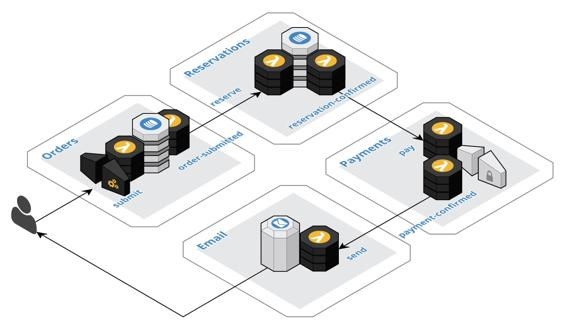

Example – order collaboration
This example, as depicted in the following diagram, demonstrates choreographing the interactions of multiple components using the Event Collaboration pattern. The components are collaborating to implement a business process for ordering a product that must be reserved in advance, such as a ticket to a play or an airline reservation. The customer completes and submits the order, and then the reservation must be confirmed, followed by charging the customer's credit card, and finally sending an email confirmation to the customer.

The Orders component is implemented following the Backend For Frontend pattern. The customer submits the order to the Orders component via an API gateway call to update the order in the database with a submitted status. The Orders component employs the Database-First variant of the Event Sourcing pattern to atomically publish the order-submitted event in reaction to the database update. The specific event to publish is determined based on the status field.
The Reservations component implements a stream processor that consumes the order-submitted event and reserves the product in the database. The Reservations component also leverages Database-First Event Sourcing to atomically publish the reservation-confirmed event. Again, the status of the reservation in the database is used to determine the correct event type to emit.
The Payments component is implemented following the External Service Gateway pattern. The component implements a stream processor to consume the reservation-confirmed event and invoke the external service to charge the customer's credit card. A webhook is registered to consume events from the external service. The component publishes a payment-confirmed event when it is notified by the external system that the charge was successfully processed.
The Email component is also implemented following the External Service Gateway pattern. The component implements a stream processor to consume the payment-confirmed event and then sends a confirmation message to the customer. In this example, there is no reason to consume events from the external email system.
The collaboration is initiated by a synchronous interaction with the end user at the boundary of the system. The other components atomically invoke a command when the desired event is received. They each atomically produce an event to reflect the change in state, thus triggering further action. A reasonably complex collaboration can be accomplished by simply chaining together multiple components following the Database-First variant of the Event Sourcing pattern.